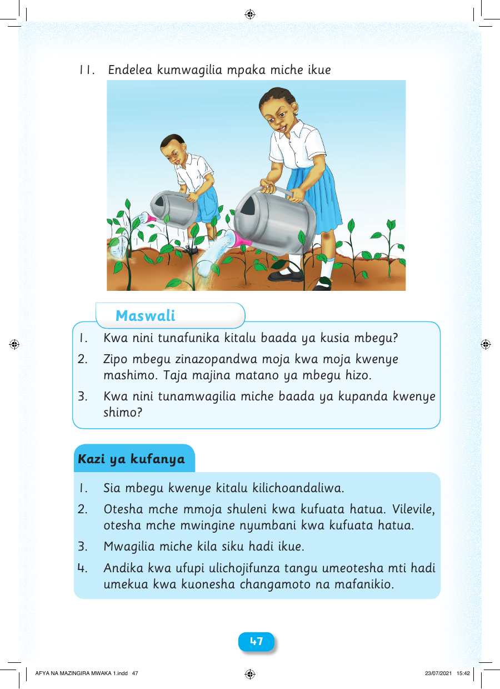

11. Endelea kumwagilia mpaka miche ikue Maswali 1. Kwa nini tunafunika kitalu baada ya kusia mbegu? 2. Zipo mbegu zinazopandwa moja kwa moja kwenye mashimo. Taja majina matano ya mbegu hizo. 3. Kwa nini tunamwagilia miche baada ya kupanda kwenye shimo? Kazi ya kufanya 1. Sia mbegu kwenye kitalu kilichoandaliwa. 2. Otesha mche mmoja shuleni kwa kufuata hatua. Vilevile, otesha mche mwingine nyumbani kwa kufuata hatua. 3. Mwagilia miche kila siku hadi ikue. 4. Andika kwa ufupi ulichojifunza tangu umeotesha mti hadi umekua kwa kuonesha changamoto na mafanikio. 4477 AFYA NA MAZINGIRA MWAKA 1.indd 47 23/07/2021 15:42